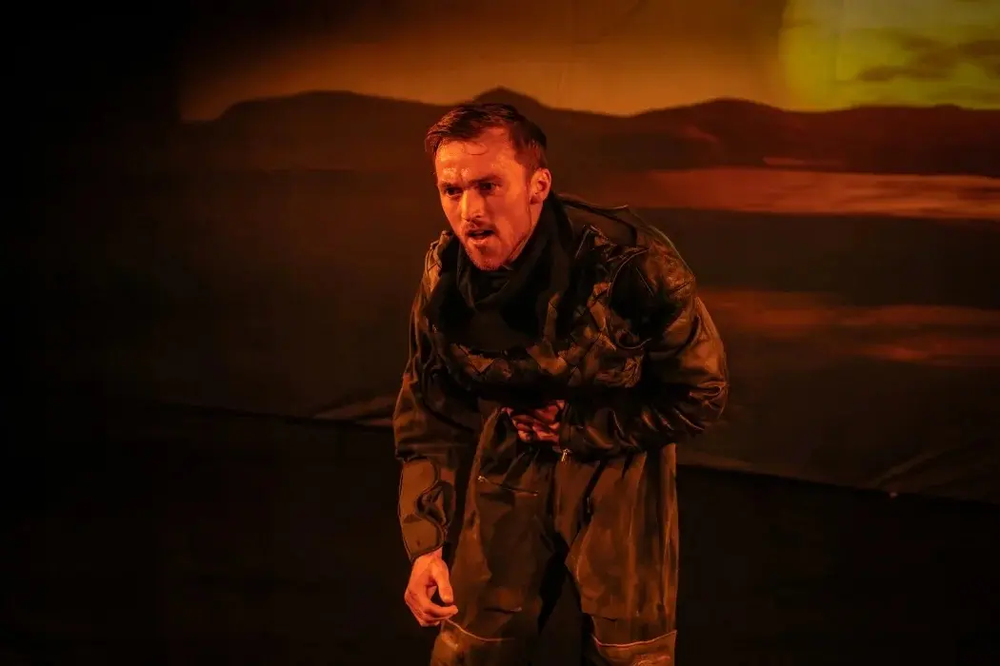
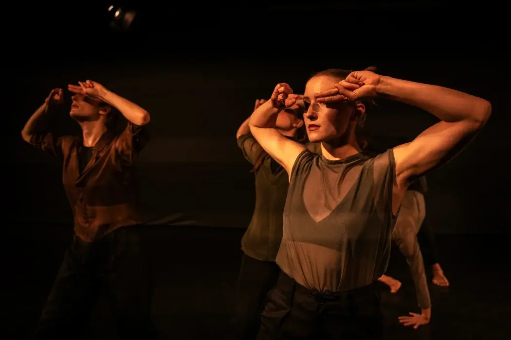
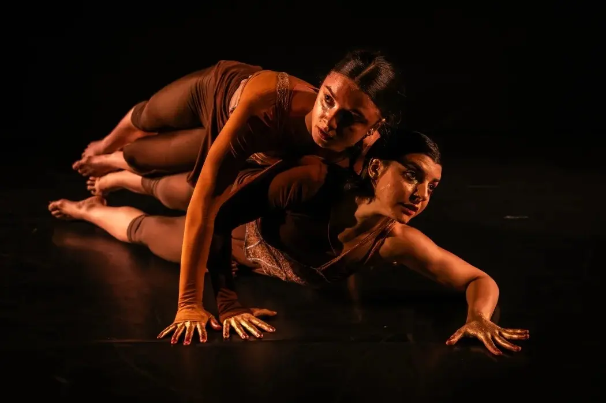

OFF
ON
Hi, I'm Michel Delaloye
Welcome to my digital space. Explore my latest work below—where light, video, and digital media intersect—and get an exclusive look behind the scenes.
Now feel free to explore...
My Projects
Click to Shuffle


Sonst war es schön - 2026
A stage play with musical accompaniment about three siblings. It takes the audience on a wild journey through their childhood.
View Project →
Click to Shuffle



Next Matters - 2026
A three-part dance evening featuring three choreographers from the dance company of the Lucerne Theater.
View Project →